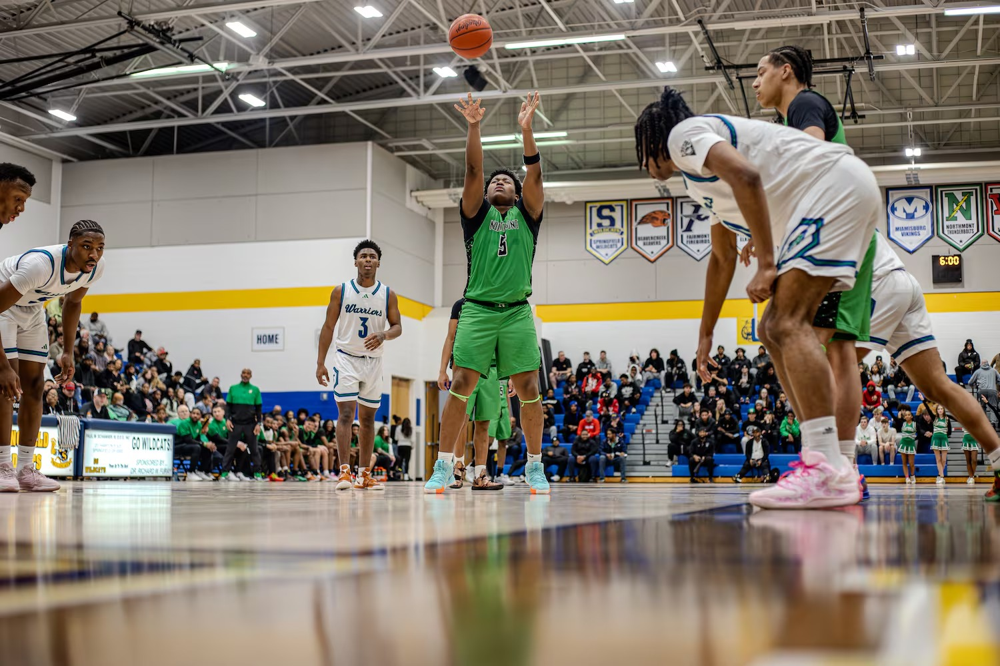
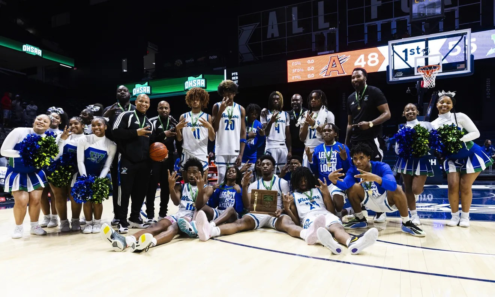
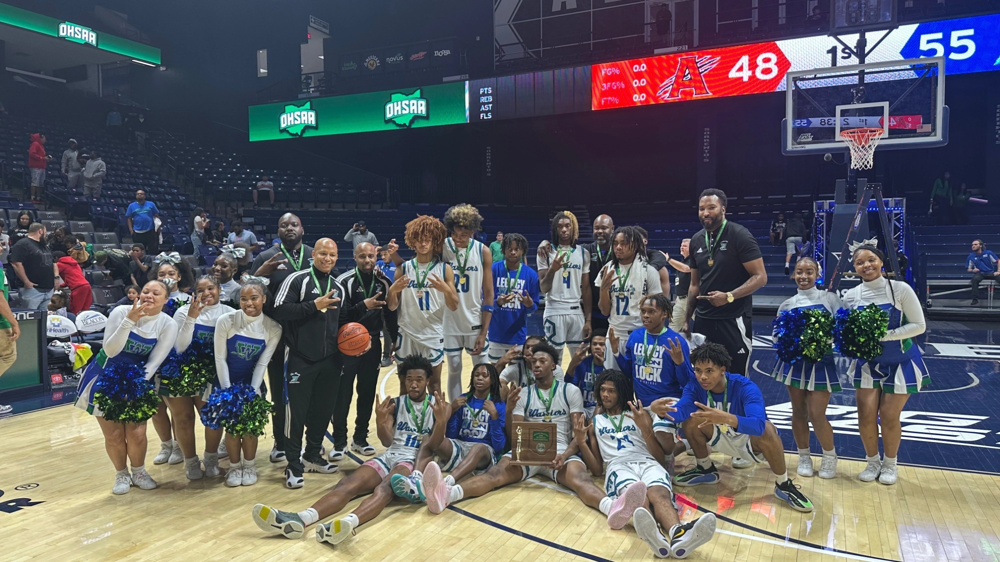

Hudl Highlight Embed
Public Hudl film embed with a direct profile link above.
A futuristic athlete hub built around public media, film, recruiting profiles, articles, stats and social links — now with a visible media-first layout instead of hidden placeholder sections.
This section is intentionally near the top so the family immediately sees pictures, article buttons and links.
Public feature image from WCPO coverage.
Warriors public athletics media coverage.
Central Catholic public All-Ohio image.

Public Winton Woods athletics media.

Public Enquirer / athletics image card.

Public Winton Woods championship image.
Public Hudl film embed with a direct profile link above.
Embedded public YouTube video.
Public video embed used as part of the media archive.
Camp invitation, offer mentions, season production and Winton Woods context.
Winton Woods’ historic start and Isaiah’s scoring/rebounding production.
Winton Woods recap of 43 points and 10 threes in the district semifinal.
Additional Winton Woods postseason coverage.
Central Catholic coverage of honorable mention All-Ohio recognition.
Central Catholic coverage of sophomore All-Ohio and District 7 honors.
Central Catholic reported honorable mention All-Ohio and freshman production.
Central Catholic reported 18.8 PPG, 6.3 RPG, 2.0 APG and 1.3 SPG.
WCPO reported major production, a 22-3 season, regional final context and high-major offers.
Winton Woods credited Isaiah Mack-Russell with a dominant district semifinal performance.
WCPO reported the invitation to the national exposure camp in Las Vegas.